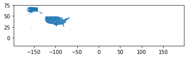
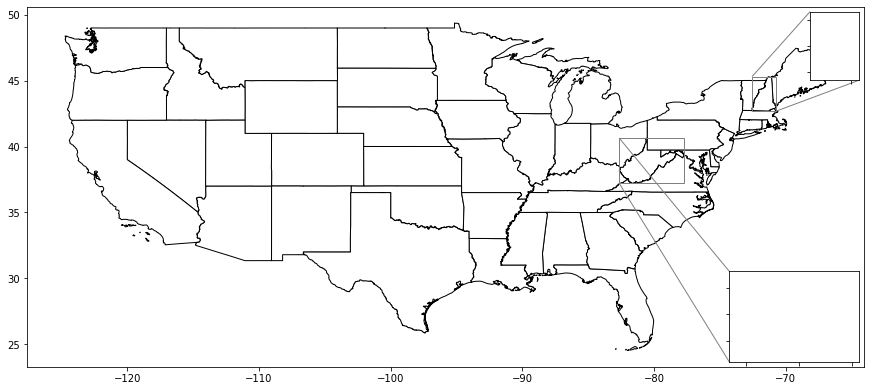
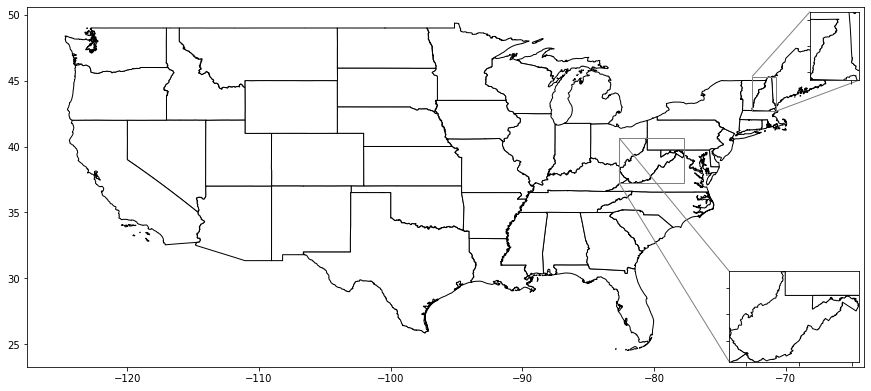

Using matplotlib’s zoomed_inset_axes with geopandas¶
I could not figure out how to plot a map in the zoomed inset
[2]:
import pandas as pd
import geopandas as gpd
import numpy as np
from shapely.geometry import Point, MultiPoint, Polygon, MultiPolygon
import os
import sys
import matplotlib.pyplot as plt
from mpl_toolkits.axes_grid1.inset_locator import zoomed_inset_axes
from mpl_toolkits.axes_grid1.inset_locator import mark_inset
from zipfile import ZipFile as zzip
import requests
sys.path.append(os.path.realpath('..'))
[12]:
url = r"https://www2.census.gov/geo/tiger/GENZ2016/shp/cb_2016_us_state_5m.zip"
filename = r"cb_2016_us_state_5m.zip"
r = requests.get(url)
# open method to open a file on your system and write the contents
with open("../input_data/"+filename, "wb") as file:
file.write(r.content)
[13]:
fp = "../input_data/"
foldername = "us_states"
with zzip(fp+filename, 'r') as file:
#printing all the contents of the zip file
#file.printdir()
path = fp+foldername
os.mkdir(path)
# extracting all the files
print('Extracting all the files now...')
file.extractall(fp+foldername)
print('Done!')
Extracting all the files now...
Done!
[3]:
fp = "../input_data/us_states/"
states = gpd.read_file(fp+"cb_2016_us_state_5m.shp")
[4]:
states.columns
[4]:
Index(['STATEFP', 'STATENS', 'AFFGEOID', 'GEOID', 'STUSPS', 'NAME', 'LSAD',
'ALAND', 'AWATER', 'geometry'],
dtype='object')
[5]:
states.plot()
[5]:
<matplotlib.axes._subplots.AxesSubplot at 0x1c26eaa3dd8>

[6]:
states.crs
[6]:
{'init': 'epsg:4269'}
[7]:
states.head()
[7]:
| STATEFP | STATENS | AFFGEOID | GEOID | STUSPS | NAME | LSAD | ALAND | AWATER | geometry | |
|---|---|---|---|---|---|---|---|---|---|---|
| 0 | 01 | 01779775 | 0400000US01 | 01 | AL | Alabama | 00 | 131173688951 | 4593686489 | (POLYGON ((-88.04374299999999 30.517423, -88.0... |
| 1 | 02 | 01785533 | 0400000US02 | 02 | AK | Alaska | 00 | 1477946266785 | 245390495931 | (POLYGON ((-133.655819 55.625617, -133.624921 ... |
| 2 | 04 | 01779777 | 0400000US04 | 04 | AZ | Arizona | 00 | 294198560125 | 1027346486 | POLYGON ((-114.799683 32.593621, -114.809393 3... |
| 3 | 08 | 01779779 | 0400000US08 | 08 | CO | Colorado | 00 | 268429343790 | 1175112870 | POLYGON ((-109.060253 38.599328, -109.059541 3... |
| 4 | 09 | 01779780 | 0400000US09 | 09 | CT | Connecticut | 00 | 12542638347 | 1815476291 | POLYGON ((-73.72777499999999 41.100696, -73.69... |
[8]:
statesbounds = states.bounds
[9]:
statesbounds.head()
[9]:
| minx | miny | maxx | maxy | |
|---|---|---|---|---|
| 0 | -88.473227 | 30.221132 | -84.891841 | 35.008028 |
| 1 | -179.147340 | 51.219862 | 179.778470 | 71.352561 |
| 2 | -114.814185 | 31.332177 | -109.045223 | 37.004260 |
| 3 | -109.060253 | 36.992426 | -102.041524 | 41.003444 |
| 4 | -73.727775 | 40.985171 | -71.786994 | 42.050587 |
[10]:
statesbounds = statesbounds.merge(states['STATEFP'],how = 'left',
left_on = statesbounds.index,
right_on = states.index)
[11]:
statesbounds = statesbounds.set_index('STATEFP')
[12]:
statesbounds.drop('key_0', axis = 1, inplace = True)
[13]:
statesbounds.head()
[13]:
| minx | miny | maxx | maxy | |
|---|---|---|---|---|
| STATEFP | ||||
| 01 | -88.473227 | 30.221132 | -84.891841 | 35.008028 |
| 02 | -179.147340 | 51.219862 | 179.778470 | 71.352561 |
| 04 | -114.814185 | 31.332177 | -109.045223 | 37.004260 |
| 08 | -109.060253 | 36.992426 | -102.041524 | 41.003444 |
| 09 | -73.727775 | 40.985171 | -71.786994 | 42.050587 |
Could not figure out how to get a plot to appear in the zoomed inset
[16]:
f, ax = plt.subplots(figsize=(15, 20))
# State layer
states.loc[(states['STATEFP'] != "60") &
(states['STATEFP'] != "66") &
(states['STATEFP'] != "69") &
(states['STATEFP'] != "72") &
(states['STATEFP'] != "78") &
(states['STATEFP'] != "15") &
(states['STATEFP'] != "02")
].plot(ax=ax, edgecolor='black', color = 'white')
axins = zoomed_inset_axes(ax, 2, loc=1)
axins2 = zoomed_inset_axes(ax, 2, loc=4)
minx,miny,maxx,maxy = statesbounds.loc['33']
axins.set_xlim(minx, maxx)
axins.set_ylim(miny, maxy)
minx,miny,maxx,maxy = statesbounds.loc['54']
axins2.set_xlim(minx, maxx)
axins2.set_ylim(miny, maxy)
mark_inset(ax, axins, loc1=2, loc2=4, fc="none", ec="0.5")
mark_inset(ax, axins2, loc1=2, loc2=3, fc="none", ec="0.5")
# Plot zoom window
plt.setp(axins.get_xticklabels(), visible=False)
plt.setp(axins.get_yticklabels(), visible=False)
plt.setp(axins2.get_xticklabels(), visible=False)
plt.setp(axins2.get_yticklabels(), visible=False)
#ax.set_axis_off()
plt.show()

Figured this out thanks to ljwolf in https://github.com/geopandas/geopandas/issues/1114
[15]:
f, ax = plt.subplots(figsize=(15, 20))
# State layer
states.loc[(states['STATEFP'] != "60") &
(states['STATEFP'] != "66") &
(states['STATEFP'] != "69") &
(states['STATEFP'] != "72") &
(states['STATEFP'] != "78") &
(states['STATEFP'] != "15") &
(states['STATEFP'] != "02")
].plot(ax=ax, edgecolor='black', color = 'white')
axins = zoomed_inset_axes(ax, 2, loc=1)
axins2 = zoomed_inset_axes(ax, 2, loc=4)
minx,miny,maxx,maxy = statesbounds.loc['33']
axins.set_xlim(minx, maxx)
axins.set_ylim(miny, maxy)
minx,miny,maxx,maxy = statesbounds.loc['54']
axins2.set_xlim(minx, maxx)
axins2.set_ylim(miny, maxy)
mark_inset(ax, axins, loc1=2, loc2=4, fc="none", ec="0.5")
mark_inset(ax, axins2, loc1=2, loc2=3, fc="none", ec="0.5")
# Plot zoom window
states.loc[(states['STATEFP'] != "33")].plot(ax= axins, edgecolor='black', color='white' )
states.loc[(states['STATEFP'] != "54")].plot(ax= axins2, edgecolor='black', color='white' )
plt.setp(axins.get_xticklabels(), visible=False)
plt.setp(axins.get_yticklabels(), visible=False)
plt.setp(axins2.get_xticklabels(), visible=False)
plt.setp(axins2.get_yticklabels(), visible=False)
#ax.set_axis_off()
plt.show()

Also, a better way to get the boundary box without creating a new dataframe and merging in a key id into the new dataframe to use it
[17]:
minx,miny,maxx,maxy = states.query('STATEFP == "33"').total_bounds
print(minx,miny,maxx,maxy)
-72.55724699999999 42.69699 -70.703799 45.305476
[18]:
# requires more initial steps
statesbounds = states.bounds
statesbounds = statesbounds.merge(states['STATEFP'],how = 'left',
left_on = statesbounds.index,
right_on = states.index)
statesbounds = statesbounds.set_index('STATEFP')
statesbounds.drop('key_0', axis = 1, inplace = True)
minx,miny,maxx,maxy = statesbounds.loc['33']
print(minx,miny,maxx,maxy)
-72.55724699999999 42.69699 -70.703799 45.305476